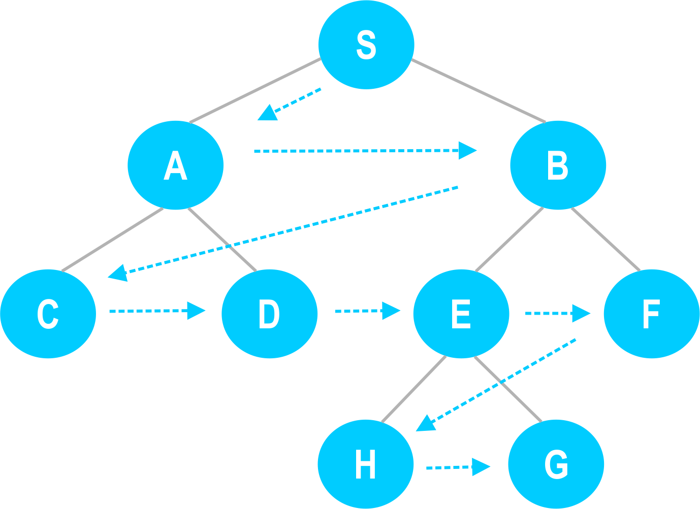
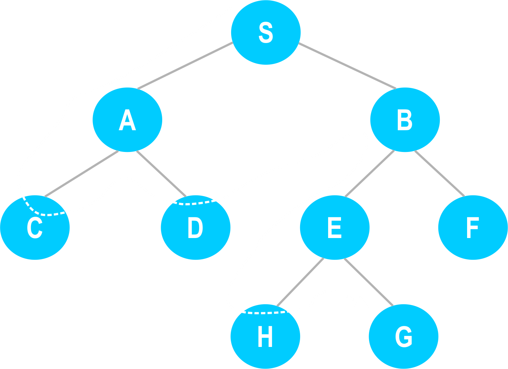

"SEARCH"
1.Konsep Pencarian
- Hal penting dalam menentukan keberhasilan sistem cerdas adalah kesuksesan dalam pencarian.
- Pencarian = suatu proses mencari solusi dari suatu permasalahan melalui sekumpulan kemungkinan ruang keadaan (state space).
- Ruang keadaan = merupakan suatu ruang yang berisi semua keadaan yang mungkin.
- Untuk mengukur perfomansi metode pencarian, terdapat empat kriteria yang dapat digunakan :
- Completeness : Apakah metode tersebut menjamin penemuan solusi jika solusinya memang ada?
- Time complexity : Berapa lama waktu yang diperlukan?
- Space complexity : Berapa banyak memori yang diperlukan?
- Optimality : Apakah metode tersebut menjamin menemukan solusi yang terbaik jika terdapat beberapa solusi berbeda?
- Pencarian atau pelacakan merupakan salah satu teknik untuk menyelesaikan permasalahan dalam bidang kecerdasan buatan.
- Teknik dasar pencarian masalah memberikan suatu kunci bagi banyak sejarah penyelesaian yang penting dalam bidang kecerdasan buatan.
2.Teknik Pencarian Dan Penjelasan
- Pada dasarnya ada dua teknik pencarian yang biasanya digunakan, yaitu :
- Pencarian buta (blind search)
- Pencarian terbimbing (heuristic serach)
Pencarian Buta
- Pencarian buta merupakan sekumpulan prosedur yang digunakan dalam melacak ruang keadaan.
- Pencarian berlangsung sampai solusi terakhir ditemukan.
- Idenya adalah menguji seluruh kemungkinan yang ada untuk menemukan solusi.
- Pendekatan ini kurang efisien dan merupakan pemaksaan (brute force search).
- Dalam memecahkan masalah yang sangat besar sejumlah keadaan baru muncul, sehingga alternatif yang perlu dipertimbangkan pun menjadi lebih banyak.
- Akibatnya diperlukan waktu yang lama untuk menemukan satu solusi.
Pencarian Heuristic
- Kata heuristic berasal dari bahasa Yunani heuriskein dari kata dasar eureka atau heurika yang berarti mengungkap atau menemukan.
- Dalam AI, heuristic diperkenalkan sebagai suatu teknik yang meningkatkan efisiensi proses pencarian, yang dimungkinkan dengan mengorbankan kelengkapan.
- Heuristic seperti pemandu perjalanan yang baik untuk tujuan pokok mencari arah yang secara umum menarik, tetapi bisa jadi tidak baik jika mempertimbangkan ketertarikan tiap orang berbeda untuk tiap objek berbeda.
- Menggunakan heuristic karena berharap mendapatkan solusi yang baik dari masalah yang sulit.
- Satu contoh general-purpose heuristic yang baik yang berguna untuk banyak kombinasi masalah adalah nearest neighbor heuristic, yang bekerja dengan menyeleksi alternatif lokal terbaik pada tiap langkah.
- Aplikasinya adalah dalam masalahTravelling Salesman, yang menggunakan beberapa prosedur berikut :
- Pilih secara acak satu kota sebagai awal perjalanan
- Untuk memilih kota berikut, lihat semua kota yang belum dikunjungi dan pilih yang terdekat lalu kunjungi.
- Ulangi langkah 2 sampai semua kota dikunjungi.
3.Karakteristik Masalah
- Pencarian heuristic adalah metode yang sangat umum yang dapat diterapkan dalam begitu banyak masalah meliputi begitu banyak variasi teknik yang spesifik, dimana masing-masing efektif untuk penyelesaian masalah tertentu yang lebih spesifik.
- Untuk memilih metode mana/kombinasi metode mana yang akan digunakan untuk menyelesaikan masalah, penting untuk menganalisa masalah pada beberapa dimensi kunci atau karakteristik sebagai berikut :
- Dapatkah masalah disederhanakan kedalam kelompok terpisah yang lebih kecil atau subprogram yang lebih mudah ?
- Dapatkah satu tahap penyelesaian solusi diabaikan atau setidaknya tidak dilakukan jika terbukti tidak layak ?
- Apakah ruang lingkup masalah dapat diprediksi ?
- Dapatkah dinyatakan sebuah solusi yang baik untuk penyelesaian masalah tanpa membandingkannya dengan solusi lain yang mungkin ?
- Solusi yang diinginkan adalah sebuah stata atau jalur menuju stata ?
- Apakah sejumlah pengatahuan mutlak diperlukan untuk menyelesaikan masalah atau pengetahuan hanya diperlukan untuk membatasi pencarian ?
- Dapatkah komputer yang diberikan permasalahan langsung memberikan solusi atau pemecahan masalah memerlukan interaksi antara komputer dan manusia ?
4.Teknik Search
- Arah search
- Dapat dilakukan : Maju, bermula dari keadaan awal (start state) Mundur, diawali dari keadaan tujuan (goal state)
- Topologi proses search
- Ada dua macam penggambaran problem, yaitu dalam bentuk :
- Pohon (tree)
- Graf (graph) : Graf berarah dan Graf tidak berarah
5.Metode Breadth-First-Search
- Atau algoritma pencarian melebar adalah algoritma yang melakukan pencarian secara melebar yang mengunjungi simpul secara preorder yaitu mengunjungi suatu simpul kemudian mengunjungi semua simpul yang bertetangga dengan simpul tersebut terlebih dahulu.

- Selanjutnya, simpul yang belum dikunjungi dan bertetangga dengan simpul simpul yang tadi dikunjungi, demikian seterusnya.
- Jika graf berbentuk pohon berakar, maka semua simpul pada aras d dikunjungi lebih dahulu sebelum simpulsimpul pad aras d+1.
- Merupakan pencarian yang dilakukan dengan mengunjungi tiap tiap node secara sistematis pada setiap level hingga keadaan tujuan ditemukan.
- Penelusuran yang dilakukan dengan mengunjungi nodenode pada level yang sama hingga ditemukan tujuan (goal state) nya.
- Algoritma Breadth-First-Search :
- Bentuk variabel dengan nama NODE-LIST dan jadikan sebagai initial state.
- Sampai goal state ditemukan atau NODE-LIST kosong, lakukan :
- Ambil elemen pertama dari NODE-LIST, sebut E. jika NODE-LIST kosong, quit
- Untuk tiap cara dimana tiap aturan(fungsi) dapat cocok dengan stata di E, lakukan :
- Gunakan aturan(fungsi) untuk menuju stata baru
- Jika stata baru adalah goal state, quit return stata ini
- Jika bukan, tambahkan stata baru di akhir NODE-LIST.
- Kebaikan Breadth-First-Search :
- Breadth-First-Search tidak akan terjebak untuk menelusuri satu jalur tertentu saja
- Jika solusi memang ada, maka dijamin Breadth-FirstSearch akan menemukannya.
- Keburukan Breadth-First-Search :
- Memerlukan memori lebih besar karena harus menyimpan semua simpul dari tree yang ditelusuri
- Harus menelusuri semua bagian tree pada level yang sama sebelum beralih ke level berikutnya.
Metode Depth-First-Search
- Teknik pencarian dengan Depth First Search adalah melakukan ekspansi menuju node yang paling dalam pada tree.
- Node paling dalam dicirikan dengan tidak adanya successor dari node itu.
- Setelah node itu selesai diekspansi, maka node tersebut akan ditinggalkan, dan dilakukan ke node paling dalam lainnya yang masih memiliki successor yang belum diekspansi.
- Pencarian menggunakan Depth First Search akan berlanjut terus sampai kedalaman paling terakhir dari tree.

- Permasalahan yang muncul pada DFS adalah ketika proses pencarian tersebut menemui infinite state space.
- Hal ini bisa diatasi dengan menginisiasikan batas depth pada level tertentu semenjak awal pencarian.
- Sehingga node pada level depth tersebut akan diperlakukan seolah-olah mereka tidak memiliki successor
- Algoritma Depth-First-Search :
- Jika initial state adalah goal state, quit dan return success
- Jika bukan, lakukan dibawah ini sampai dicapai sinyal success atau gagal
- Tentukan successor, E dari initial state. Jika tidak ada lagi successor, maka sinyal gagal
- Jalankan Depth-Fisrt-Search dengan E sebagai initial state
- Jika success dihasilkan, sinyal success. Jika tidak maka ulangi langkah 2.
- Kebaikan Depth-First-Search :
- Depth-First-Search memerlukan ruang memori lebih kecil karena hanya menyimpan simpul-simpul dari path/jalur yang sedang dikerjakan.
- Dapat menemukan solusi tanpa menelusuri terlalu banyak ruang search.
- Keburukan Depth-First-Search :
- Ada kemungkinan terjebak pada satu jalur sampai terlalu jauh, bahkan selamanya, sebelum jalur tsb mendapatkan stata yang tidak lagi memiliki successor (buntu).
- Mungkin menemukan jalur panjang ke solusi pada satu bagian dari tree, sementara jalur terpendek tersedia pada bagian lain tree yang belum ditelusuri.
|